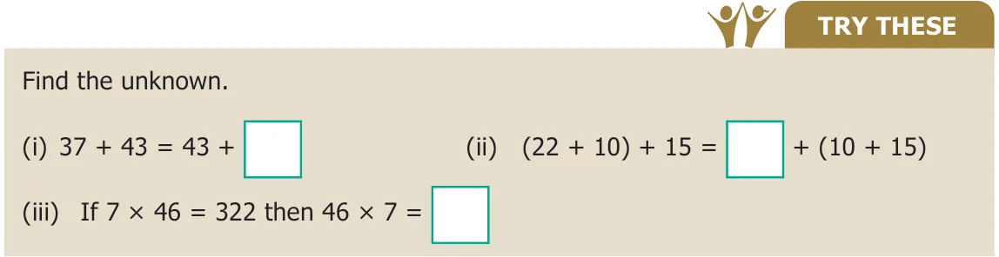
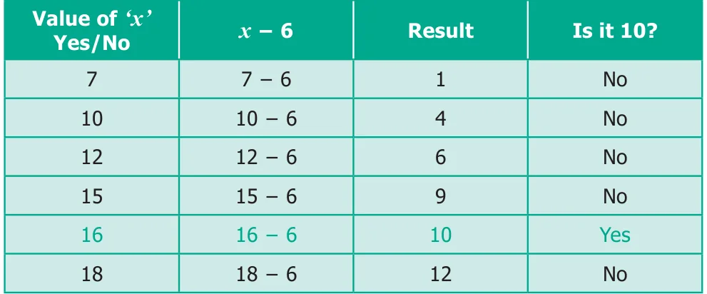
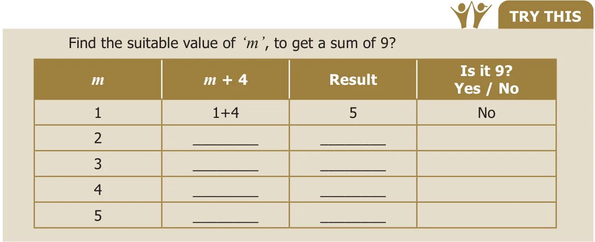

Let us fill in the empty boxes
(a) \(\Box + 3 = 8\) (b) \(2 + \Box = 9\) (c) \(11 - 5 = \Box\)
The \(\Box\) stands for an unknown number.
To make the equations meaningful, we shall write 5 in the first box, we shall write 7 in the second box and we shall write 6 in the third box.

Example 2.1
Suppose that there are some eggs in a tray. If 6 eggs are taken out from it and still 10 eggs are remaining, how many eggs are there in the tray?
According to the given statement,
This can be written as, \(x - 6\) gives 10, where '\(x\)' denotes the unknown number.
Now, we will find out for what value of '\(x\)', \(x - 6\) gives 10.

Hence, the unknown number (variable) '\(x\)' takes the value 16.

Example 2.2
Athiyan and Mugilan are brothers. Athiyan is '\(p\)' years old and Mugilan is elder to Athiyan by 6 years. Write an algebraic statement for this and find the age of Mugilan if Athiyan is 20 years old.
Age of Athiyan \(=\) '\(p\)' years
Age of Mugilan \(=\) '\(p + 6\)' years (algebraic statement)
If \(p = 20\), then Mugilan's age is \(= 20 + 6\)
\(= 26\) years.